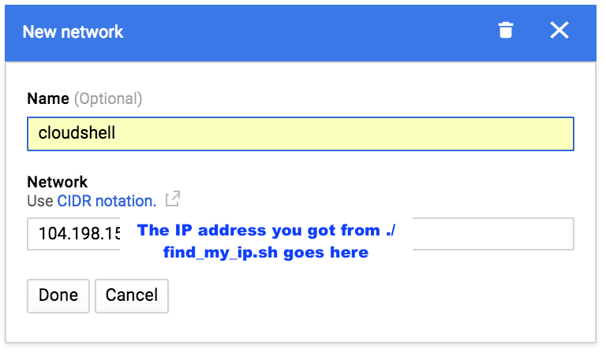
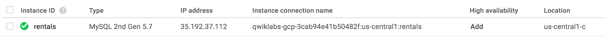
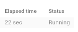

Machine learning pour les recommandations avec Dataproc
Aperçu
Dans cet atelier, vous allez exécuter un modèle de recommandations basées sur le machine learning à l'aide de Dataproc.
Objectifs de l'atelier
Au cours de cet atelier, vous allez apprendre à réaliser les opérations suivantes :
Lancer Dataproc
Exécuter des tâches Spark ML à l'aide de Dataproc
Présentation
Au cours de cet atelier, vous allez entraîner un modèle de recommandations basées sur le machine learning (précédentes notes attribuées par les utilisateurs) à l'aide de Dataproc. Vous appliquerez ensuite ce modèle pour créer une liste de recommandations pour chaque utilisateur figurant dans la base de données.
Au cours de cet atelier, vous allez apprendre à réaliser les opérations suivantes :
Lancer Dataproc
Entraîner et appliquer un modèle de ML écrit dans PySpark pour créer des recommandations de produits
Explorer les lignes insérées dans Cloud SQL
Configuration
Tâche 1 : Créer des éléments
Nous allons commencer par cloner le dépôt du code en créant un bucket de stockage dans le projet GCP et en organisant certains fichiers. Ces étapes sont similaires aux étapes que vous avez effectuées lors de l'atelier précédent.
Dans Cloud Shell, clonez le dépôt à l'aide de la commande suivante :
Dans la console GCP, accédez au menu de navigation (), puis cliquez sur Storage (Stockage).
Cliquez sur Create bucket (Créer un compartiment).
Dans le champ Name (Nom), saisissez votre ID du projet, puis cliquez sur Create (Créer). Sélectionnez Set object-level and bucket-level permissions (Définir des autorisations au niveau de l'objet et du bucket) en dessous de Access control model (Modèle de contrôle des accès), puis cliquez sur Create (Créer). Pour trouver votre ID du projet, cliquez sur le projet dans le menu supérieur de la console GCP et copiez la valeur sous ID pour le projet sélectionné.
Pour finir, placez les fichiers de données et de définition de table dans Cloud Storage afin de pouvoir les importer ultérieurement dans Cloud SQL. Depuis Cloud Shell, dans le répertoire lab3a, saisissez la commande suivante et remplacez <NOM-BUCKET> par le nom du bucket que vous venez de créer :
gsutil cp cloudsql/* gs://<NOM-BUCKET>/sql/
Dans la section "Storage" (Stockage) de la console GCP, accédez à votre bucket, puis vérifiez que les fichiers .sql et .csv apparaissent dans Cloud Storage.
Tâche 2 : Créer une instance Cloud SQL
Pour créer une instance Cloud SQL, procédez comme suit :
Dans la console GCP, accédez au menu de navigation (), puis cliquez sur SQL dans la section "Storage" (Stockage).
Cliquez ensuite sur Create Instance (Créer une instance).
Choose MySQL(Sélectionner MySQL). Cliquez sur Next(Suivant) si nécessaire. Cliquez sur Configure MySQL Development(Configurer Développement de MySQL) ou Choose Second Generation(Elegir la segunda generación).
Dans le champ Instance ID (ID d'instance), saisissez rentals.
Faites défiler la page vers le bas, puis spécifiez un mot de passe racine. Pour ne pas risquer de l'oublier, notez ce mot de passe (ne le faites pas en dehors de cet atelier).
Faites défiler la page, puis cliquez sur Set Connectivity(Définir la connectivité) ou Show configuration options(Mostrar opciones de configuración), premier (si nécessaire) puis Cliquez sur Authorize networks(Réseaux autorisés) > +Add network(Ajouter réseau).
Dans Cloud Shell, vérifiez que vous êtes dans le répertoire lab3a et trouvez votre adresse IP en saisissant la commande suivante :
bash ./find_my_ip.sh
Dans la boîte de dialogue New network (Nouveau réseau), saisissez un nom (facultatif) ainsi que l'adresse IP(Réseau) obtenue lors de l'étape précédente. Cliquez sur Done (OK).

Remarque : Si vous perdez l'accès à votre VM Cloud Shell pour cause d'inactivité, vous devrez à nouveau autoriser l'accès à votre nouvelle VM Cloud Shell avec Cloud SQL. Pour plus de facilité, le répertoire lab3a comprend un script exécutable nommé authorize_cloudshell.sh.
Cliquez sur Create (Créer) pour créer l'instance. Le provisionnement de votre instance Cloud SQL devrait prendre environ une minute.
Notez l'adresse IP principale('adresse IP publique) de votre instance Cloud SQL (depuis la fenêtre du navigateur).
Tâche 3 : Créer et remplir des tables
Pour importer des définitions de tables depuis Cloud Storage, procédez comme suit :
Cliquez sur rentals pour afficher les détails de votre instance Cloud SQL.
Cliquez sur Import (Importer).
Cliquez sur Browse (Parcourir). Une liste de buckets s'affiche alors. Cliquez sur le bucket que vous avez créé, puis accédez à sql. Cliquez ensuite sur table_creation.sql, puis sur Select (Sélectionner).
Cliquez sur Import (Importer).
Pour importer ensuite des fichiers CSV à partir de Cloud Storage, cliquez sur Import (Importer).
Cliquez sur Browse (Parcourir) et accédez à sql. Cliquez sur accommodation.csv, puis sur Select (Sélectionner).
Remplissez le reste de la boîte de dialogue comme suit :
Dans le champ Database (Base de données), sélectionnez recommendation_spark.
Dans le champ Table, saisissez Accommodation.
Cliquez sur Import (Importer).
Répétez le processus d'importation (étapes 5 à 8) pour le fichier rating.csv, mais saisissez Rating comme nom dans le champ Table.
Tâche 4 : Lancer Dataproc
Pour lancer Dataproc et le configurer pour que chaque machine du cluster puisse accéder à Cloud SQL, procédez comme suit :
Dans la console GCP, accédez au menu de navigation (), puis cliquez sur SQL et notez la région de votre instance Cloud SQL :

Dans l'instantané ci-dessus, la région est us-central1.
Dans la console GCP, accédez au menu de navigation (), cliquez sur Dataproc, puis sur Enable API (Activer l'API) si vous y êtes invité. Une fois l'API activée, cliquez sur Create cluster (Créer un cluster).
Laisser la région telle quelle, c'est-à-dire globale, changez la zone pour qu'elle se trouve dans la même région que votre instance Cloud SQL. Cela permet de minimiser la latence du réseau entre le cluster et la base de données.
Pour le nœud maître, dans le champ Machine type (Type de machine), cliquez sur 2 vCPU (n1-standard-2) (2 processeurs virtuels (n1-standard-2)).
Pour les nœuds de calcul, dans le champ Machine type (Type de machine), cliquez sur 2 vCPU (n1-standard-2) (2 processeurs virtuels (n1-standard-2)).
Conservez les autres valeurs par défaut, puis cliquez sur Create (Créer). Le provisionnement de votre cluster prendra une à deux minutes.
Notez le nom, la zone et le nombre total de nœuds de calcul dans votre cluster.
Dans Cloud Shell, accédez au dossier correspondant à cet atelier et autorisez tous les nœuds Dataproc à accéder à votre instance Cloud SQL, en remplaçant <Nom-cluster>, <Zone> et <Nombre-total-de-nœuds-de-calcul> par les valeurs que vous avez notées lors de l'étape précédente :
cd ~/training-data-analyst/CPB100/lab3b
bash authorize_dataproc.sh <Nom-cluster> <Zone> <Nombre-total-de-nœuds-de-calcul>
Lorsque vous y êtes invité, saisissez Y, puis appuyez sur Enter pour continuer.
Tâche 5 : Exécuter le modèle de ML
Pour créer un modèle entraîné et l'appliquer à tous les utilisateurs du système, procédez comme suit :
Modifiez le fichier d'entraînement du modèle à l'aide de nano :
nano sparkml/train_and_apply.py
Modifiez les champs portant la mention "CHANGE" (Modifier) en haut du fichier (utilisez la flèche vers le bas pour faire défiler le fichier) pour qu'ils correspondent à votre configuration Cloud SQL (reportez-vous aux sections précédentes de cet atelier où vous avez noté les informations requises). Ensuite, enregistrez le fichier en appuyant sur Ctrl+O et Enter, puis quittez la page en utilisant Ctrl+X.
Copiez ce fichier dans votre bucket Cloud Storage à l'aide de la commande suivante :
gsutil cp sparkml/tr*.py gs://<nom-bucket>/
Dans la console Dataproc, cliquez sur Jobs (Tâches).
Cliquez sur Submit job (Envoyer une tâche).
Dans le champ Job type (Type de tâche), sélectionnez PySpark, puis précisez l'emplacement du fichier Python que vous avez importé dans votre bucket dans le champ Main python file (Classe principale ou fichier JAR).
gs://<nom-bucket>/train_and_apply.py
Cliquez sur Submit (Envoyer) et attendez que l'état de la tâche passe de Running (En cours d'exécution) à Succeeded (Réussie). Cela prendra jusqu'à cinq minutes.

Si la tâche a échoué, veuillez résoudre les problèmes en utilisant les journaux et corriger les erreurs. Vous devrez peut-être importer de nouveau le fichier Python modifié dans Cloud Storage et cloner la tâche échouée pour la renvoyer.
Tâche 6 : Explorer les lignes insérées
Dans la console GCP, accédez au menu de navigation (), puis cliquez sur SQL dans la section "Storage" (Stockage).
Cliquez sur rentals pour afficher les détails de votre instance Cloud SQL.
Sous Connect to this instance (Se connecter à cette instance), cliquez sur Connect using Cloud Shell (Se connecter via Cloud Shell). Cela ouvrira un nouvel onglet Cloud Shell. Dans l'onglet Cloud Shell, appuyez sur Entrée.
Un délai de quelques minutes peut être nécessaire pour ajouter votre adresse IP à la liste blanche des connexions entrantes.
Lorsque vous y êtes invité, saisissez le mot de passe racine que vous avez configuré, puis appuyez sur Enter.
À l'invite mysql, saisissez la commande suivante :
use recommendation_spark;
La base de données sera alors définie dans la session mysql.
Trouvez les recommandations pour certains utilisateurs :
select r.userid, r.accoid, r.prediction, a.title, a.location, a.price, a.rooms, a.rating, a.type from Recommendation as r, Accommodation as a where r.accoid = a.id and r.userid = 10;
Nous recommandons ces cinq logements. Notez que la qualité des recommandations n'est pas excellente, car notre ensemble de données était limité (voyez comme les notes prédites ne sont pas très élevées). Toutefois, l'objectif de cet atelier est d'illustrer le processus à suivre pour créer des recommandations de produits.
 ), puis cliquez sur Storage (Stockage).
), puis cliquez sur Storage (Stockage).